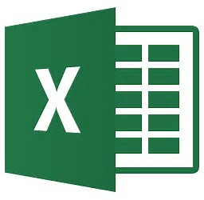
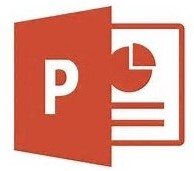
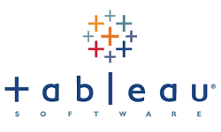
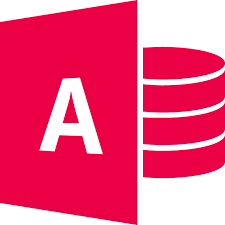

Hello, I’m Suzanna.
Currently, I am a student at CSUMB,
and my chosen field of study is Business Administration,
with
a
concentration in Informational Systems.
I am a full-time student, and on my spare time, I enjoy knitting, Sudoku, tennis, tetherball, hiking, and long walks on the beach.
I have lived in
Seaside, CA all my live, and I am blessed to live so close to the beautiful
Monterey Bay.
I live with my family in Seaside, and I am the oldest of my two siblings.
Besides school, I’m in employee at
Kohl's in
Marina, Ca.
| Course Name | Class | Grade |
|---|---|---|
| Micro Economics | BUS 202 | A |
| Financial Accounting | BUS 203 | B |
| Managerial Accounting | BUS 205 | B |
| Business Law | BUS 206 | A |
| Business Analytics | BUS 299 | A |
| Business Ethics | BUS 300S | A |
| Business Communication, Ethics, & Critical Thinking | BUS 304 | B |
| Principles of Management | BUS 305 | A |
| Fundamentals of Marketing | BUS 306 | A |
| Info Systems for Decision Making | BUS 308 | A |
| Name of Project | Software | Details and Responsiblities |
|---|---|---|
| Small Business Information System for Salinas Pizza | Microsoft Excel | Used Exel to develop a software for Salinas Pizza Used Visual Basics Main duties included managing team, creating a home page, transaction sheet, and a customer sheet. Constantly communicated with client for feedback and suggestions Project Document Link |
| Employee | Position | Year Active | Duties |
|---|---|---|---|
| Kohl's | Point of Sale Associate | 2015-Present | Open or Close registers Customer Service Greating Customers Communicating new deals or sales with customers |
| Pebble Beach Concours d'Elegance | Server | 2015 | Serving Courses Expediting Food Serving Wine Bussing Tables |




Phone Number: (831) 917-4066
Mailing Address: P.O. Box 232, Big Sur, CA 93955
E-Mail Address: suzanna.s28@gmail.com
I don't have any pets, but in the near future I plan to own a dog. I'm not sure what breed of dog I'd like, since I am planning on adopting.
One thing I enjoy the most, is spending quality time with my family and friends. Currently, I love with my parents, and that means I get to spend more time with my family than most college students. I think having a strong relationship with your family and friends is very important, well at least to me. One of the reasons why I chose a school so close to home was because I love surrounding myself with the people I love.
One I graduate from CSUMB, I'm going to search for a part-time posistion since I want to continue my higher education, and obtain a Masters in Business Administration. As I gain more experience in my field of study, my goals is to look for a managing posistion, and eventually move my way forward in the company.